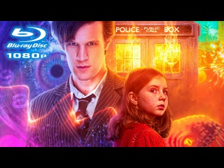
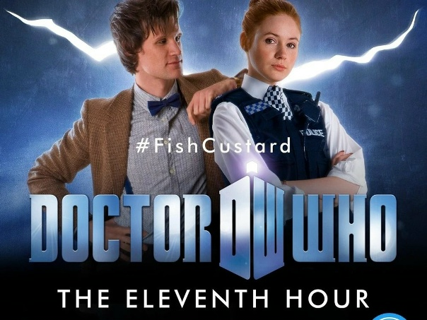
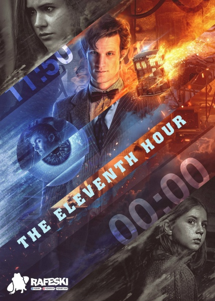

+ DVO [BeeFilm]

Весь 5-й сезон (13 серий)
 + DVO [BeeFilm] | Весь 5-й сезон (13 серий) |
The Eleventh Hour
Дата выхода: 3 апреля 2010
Формат: 65-минутный эпизод
| Варианты озвучек: | * Разные: смотрите по инструкции |
|---|---|
| Скачивание и просмотр: |
Доктор регенерировал в совершенно нового человека, но опасность наступает прежде, чем он успевает восстановиться. Его ТАРДИС находится в аварийном состоянии, звуковая отвёртка сломана, а у Доктора всего 20 минут на то, чтобы спасти весь мир - и только Эми Понд может помочь ему.

